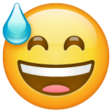

Bienvenue sur le profil de Ali Jyed !

Bonjour ! Je m'appelle Ali Jyed et je suis un jeune étudiant en première année a L'EMLV au sein du pôle Léonard DeVinci a la defense.
Grace a cette page vous pourrez en savoir plus sur moi .
Mon école
 Football
Football

De manière générale, je suis un grand amoureux du Football, et cela, dans toutes ces formes, que ça soit à la télé le dimanche ou dans un stade. Mon club favori est le Paris Saint-Germain.
Les jeux vidéo
Les jeux vidéo ont une place importante dans ma vie, mes jeux préférés sont FIFA ( qui est d'ailleurs un jeu de simulation de foot  )
et Call duty qui est un jeu de tir a la première personne accès sur la Seconde Guerre mondiale.
Me retrouver avec mes proches
Le quotidien peut nous faire perdre certaines amitiés, alors avec mes amis et moi pour préserver au maximum notre amitié nous avons decider que 1 fois par an nous nous réunissions pour passer des vacances ensemble.
Mes expériences professionnelles
Malgré mon jeune âge, je cumule déjà certaines expériences professionnelles .
Tout d'abord j'ai realié un stage d'observation de 1 mois dans un studio d'enregistrement à Casablanca au Maroc
Puis dans un univers plus rigoureux qu'est la S.M.E.I.A. (ou Société méditerranéenne et industrie automobile).
Et pour finir , j'ai travaillé dans la restauration rapide dans la région de Toulouse pendant l'été.